NPG Lite Cardio#
Overview#
NPG Lite Cardio is a web-based ECG monitor for Neuro PlayGround Lite. It shows a live ECG waveform and your heart rate (BPM) in real time, and lets you record, replay and export ECG sessions as CSV, all in the browser with nothing to install.
It works on Windows, Mac, Linux and Android in any Chromium-based browser, and on iOS with a BLE-enabled browser such as Bluefy. Open the app at upsidedownlabs.github.io/NPG-Lite-Cardio.
For a step-by-step tutorial, see Monitor ECG Anywhere on Instructables.
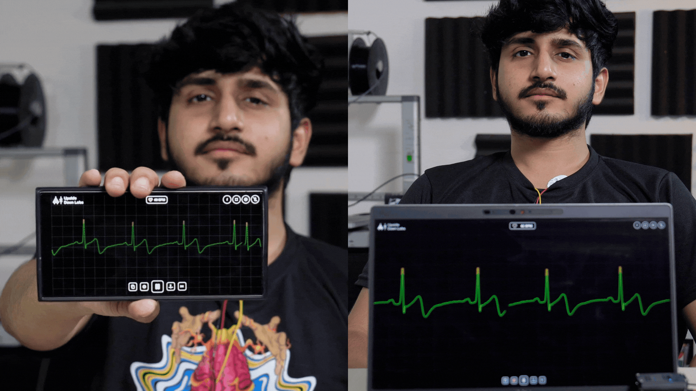
NPG Lite Cardio on a phone and a laptop#
Features#
Feature |
Description |
|---|---|
Real-time ECG |
Live ECG display at 500 Hz, rendered with WebGL. |
Heart Rate |
BPM readout with beat detection using the Pan-Tompkins algorithm. |
Signal Quality Detection |
Ignores noise and floating leads, so the heart rate only shows when there is a clear signal. |
DC Filter |
Toggle a DC filter to remove baseline wander. |
R-Peak Markers |
Marks the R-peaks on the waveform. Toggle the button to show or hide them. |
Recording |
Record ECG sessions and save them to the browser storage. |
Recordings Manager |
Play back, rename, download (CSV) or delete recordings, and use the minimap to move through long ones. |
Light and Dark Theme |
Switch between light and dark mode. |
Fullscreen Mode |
Expand the ECG to the full screen. |
3CH and 6CH Support |
Works with both the 3CH and 6CH NPG-Lite firmware variants. |
What is an ECG?#
ECG stands for electrocardiogram. It records the electrical activity of your heart. Every heartbeat creates an electrical signal, and this signal appears as a repeating waveform on the screen:
P wave: the upper chambers of the heart contract.
QRS complex: the large spike that shows the main heartbeat.
T wave: the heart relaxes before the next beat.
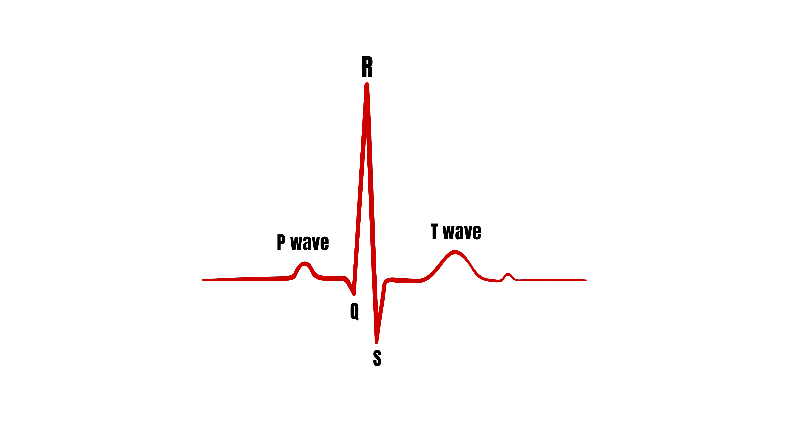
ECG Waveform#
Hardware Requirements#
Neuro PlayGround Lite (Explorer, Ninja or Beast pack)
3 BioAmp snap cables
Gel electrodes
NuPrep skin preparation gel or alcohol swabs
USB Type-C cable
Phone or laptop with Bluetooth
Software Requirements#
Any Chromium-based browser: Chrome, Edge, Brave, Opera, Vivaldi, etc. Firefox does not support Web Bluetooth. On iOS, use a BLE-enabled browser such as Bluefy.
NPG-Lite-BLE firmware flashed on the device, using NPG-Lite-Flasher-Web or the NPG Lite Flasher desktop app.
Setting up the hardware#
Flashing the firmware#
Turn on your NPG Lite using the power switch and make sure the battery is connected correctly.
Connect the NPG Lite to your computer with the USB Type-C cable.
Open NPG-Lite-Flasher-Web in your browser.
Click Connect and select the USB device named USB JTAG.
Select the NPG Lite BLE firmware and click Flash.
Wait a few seconds while the firmware is uploaded, then disconnect the USB cable.
Your NPG Lite is now ready to work wirelessly. Just make sure the battery is connected and sufficiently charged before using the ECG monitor.
Preparing your skin#
Good skin preparation improves electrode contact and gives a much cleaner ECG signal.
Clean the areas where the electrodes will go with an alcohol swab or wet wipe.
For an even better signal, you can first apply a small amount of NuPrep skin preparation gel and then clean the skin.
Let the skin dry before placing the electrodes.
Tip
For more details, see Skin Preparation and Using Gel Electrodes.
Placing the electrodes#
Connect the snap cables to the gel electrodes and peel off the plastic backing. Then use one of the two placements below.
Placement 1: Chest (ECG)#
This placement generally gives cleaner recordings.
Place the negative (black) electrode on the left side of your chest, just below the collarbone.
Place the positive (red) electrode slightly to its right, leaving a small gap between them.
Place the reference (yellow) electrode on the right side of your chest.
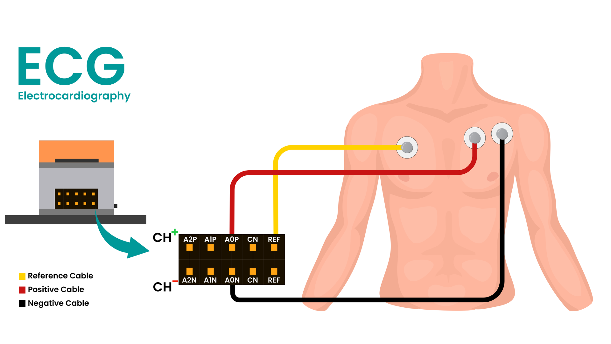
Chest (ECG) Electrode Placement#
Placement 2: Wrists (EKG)#
This placement is more convenient for quick demonstrations.
Place the negative (black) electrode on your left wrist.
Place the positive (red) electrode on your right wrist.
Place the reference (yellow) electrode on the back of your hand, on the same arm as the negative electrode, as shown in the diagram.
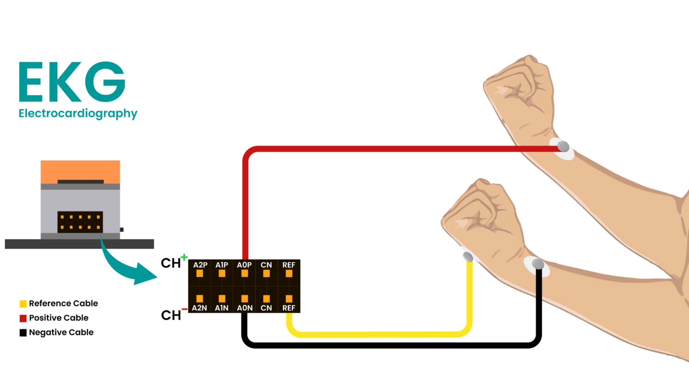
Wrist (EKG) Electrode Placement#
Connecting the snap cables to the NPG Lite#
Connect the other ends of the snap cables to the NPG Lite as shown in both diagrams:
Cable |
Chest placement |
Wrist placement |
NPG Lite pin |
|---|---|---|---|
Negative (black) |
Left chest |
Left wrist |
A0N |
Positive (red) |
Middle chest |
Right wrist |
A0P |
Reference (yellow) |
Right chest |
Back of the hand |
REF |
Connecting to NPG Lite Cardio#
Turn on NPG Lite by flipping the switch on it. Make sure it is not connected to a charger.
Make sure the device is charged. The 6th NeoPixel shows the battery level: green above 70%, orange between 20 and 70%, red below 20%.
Make sure Bluetooth is enabled on your phone or laptop. Do not pair or connect to NPG Lite from your system Bluetooth settings, only connect through the browser.
Sit at least 1 m away from any AC appliance (fans, chargers, monitors, etc.) to avoid interference.
Open NPG Lite Cardio in a Chromium-based browser, then click the Connect button (Bluetooth icon) at the bottom center.
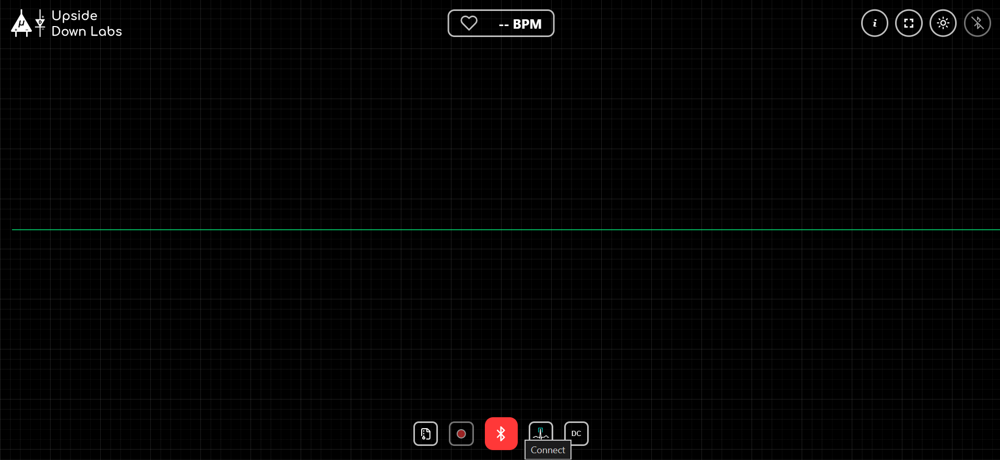
Connect#
Select your NPG Lite from the browser popup and click Pair.
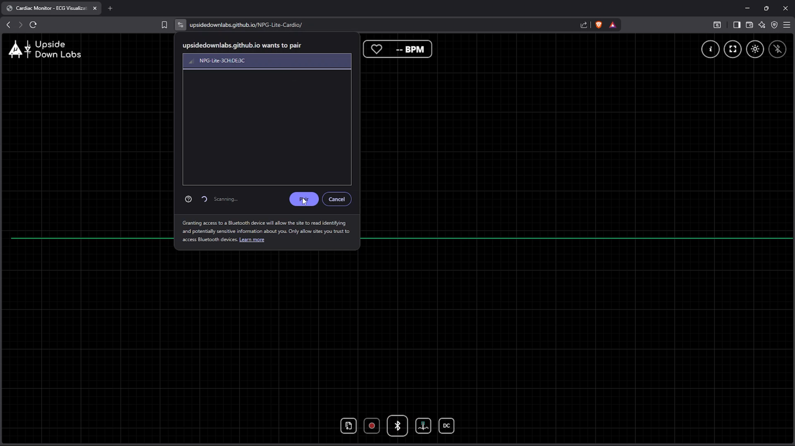
Select your NPG Lite and click Pair#
The ECG starts streaming automatically. Within a few seconds you will see the live waveform and your heart rate.
Note
Brave disables Web Bluetooth by default. Open brave://flags, search for “bluetooth”, set Web Bluetooth API to Enabled, then relaunch the browser.
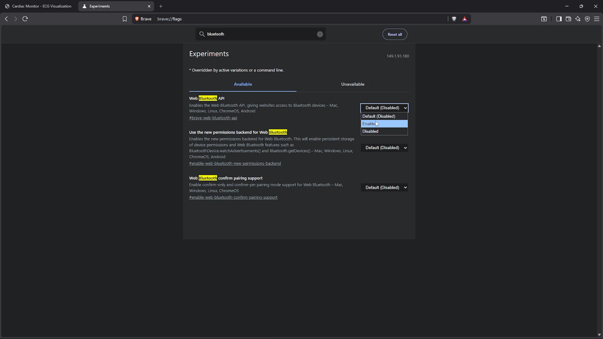
Enable Web Bluetooth in Brave#
Using the application#
Once connected you will see:
The live ECG waveform, showing the last 4 seconds at 500 Hz.
Your heart rate in BPM at the top center. It updates every second, and shows
-- BPMwhen there is no clear, regular heartbeat (for example with loose electrodes) or when the rate is outside 40 to 120 BPM.A heart icon that beats with every detected heartbeat.
Red markers on the R-peaks of the waveform.
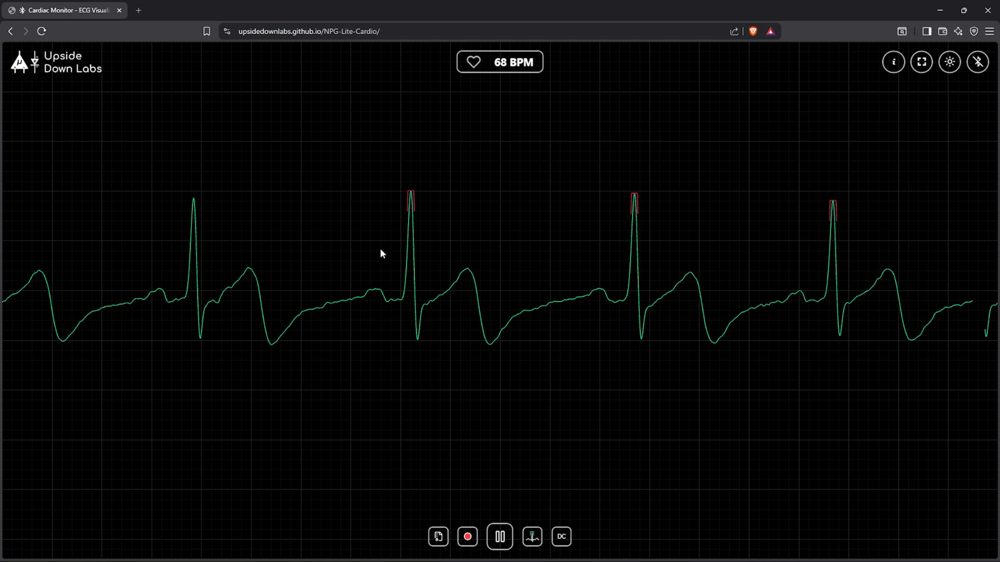
Live ECG#
Controls#
The buttons in the top right corner, from left to right:
Button |
What it does |
|---|---|
Info (i) |
Opens a small panel with the scale of the display: the display window (4 s), the size of a large box (0.20 s) and a small box (0.040 s) of the grid, the sample rate (500 Hz), and the signal filters (50 Hz notch, 30 Hz ECG low-pass and 0.5 Hz DC removal). The DC removal filter is optional: it is applied by default and can be turned off by clicking the DC filter button at the bottom. |
Fullscreen |
Toggles fullscreen mode. Press |
Theme |
Switches between light and dark mode. Your choice is remembered. |
Disconnect |
Disconnects the NPG Lite. It stays disabled until a device is connected. |
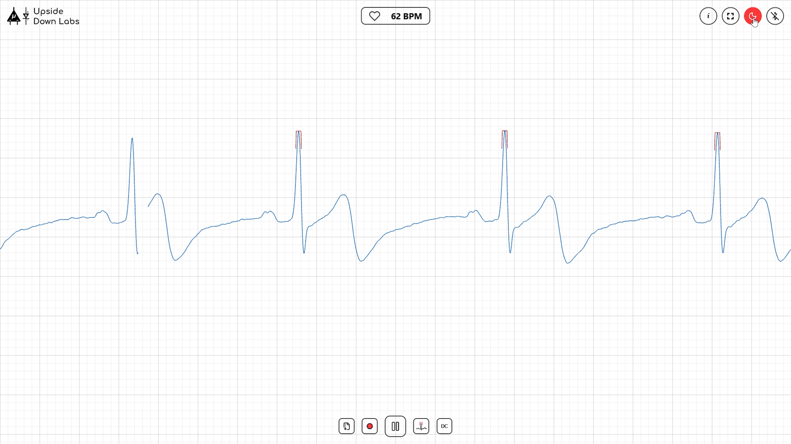
Theme Button#
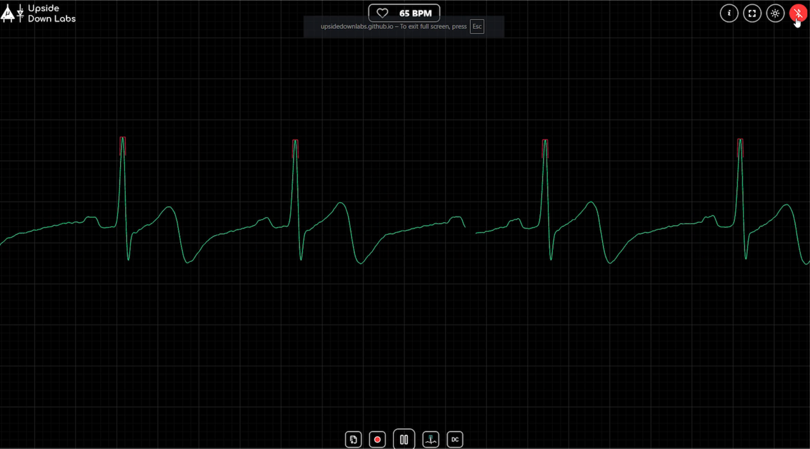
Disconnect Button#
The buttons at the bottom, from left to right:
Button |
What it does |
|---|---|
Recordings |
Opens the list of your recordings. |
Record |
Starts and stops a recording. |
Connect / Pause / Play |
The large center button. It connects to your NPG Lite. Once connected it becomes Pause, which pauses the display while staying connected, and Play resumes the live stream. |
Peaks |
Shows or hides the R-peak markers. |
DC filter |
Turns the DC filter on or off. It is on by default and removes slow baseline drift. The icon changes when the filter is off. |
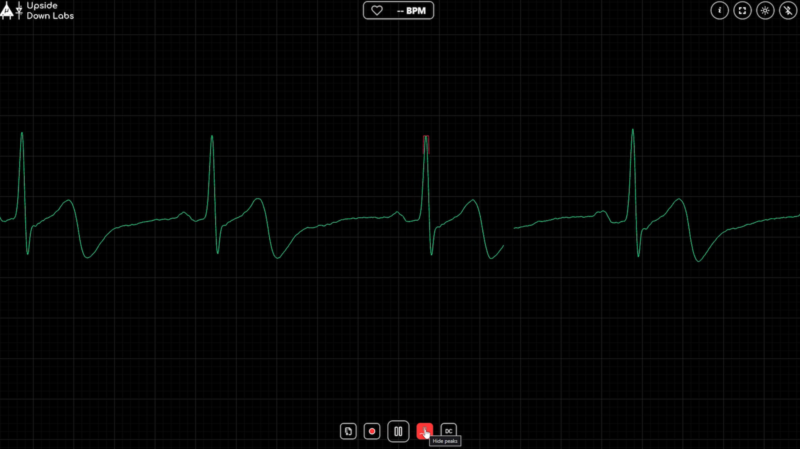
Peaks Button#
If the ECG looks upside down#
If your ECG waveform is inverted, swap the positive (red) and negative (black) electrodes. The waveform immediately appears in the correct orientation.
Recording your ECG#
Click Record (red dot) to start recording.
A timer at the bottom shows how long you have been recording.
Recordings must be at least 12 seconds long. The button stays locked for the first 12 seconds, and shorter recordings are discarded.
Click the button again to stop. The recording is saved in your browser and named
ECG-YYYYMMDD-HHMMSS.csv.
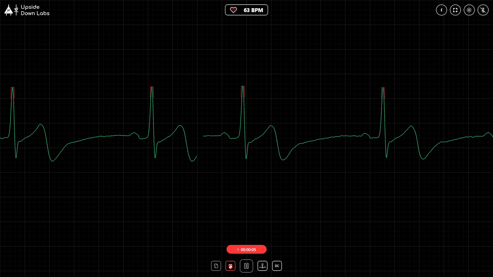
Recording#
Viewing your recordings#
Click Recordings to open the list. For each recording you can:
Click the name to rename it, then press
Enter.Click the eye icon to open it in the viewer.
Click the download icon to save it as a CSV file.
Click the trash icon to delete it.
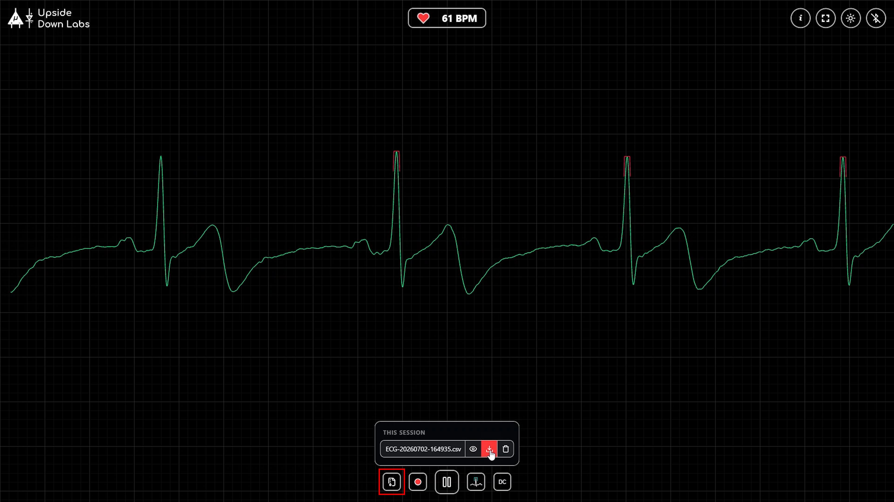
Recordings List#
The viewer replays a saved recording. The header shows its name, length and number of samples, with buttons to download it or close the viewer. To move through the recording:
Drag the highlighted window on the minimap at the bottom, or click anywhere on the minimap to jump there.
Use the left and right arrow keys, the mouse wheel or trackpad, or swipe on a touch screen.
Click the Play button at the bottom center, or the close button in the header, to return to the live view.
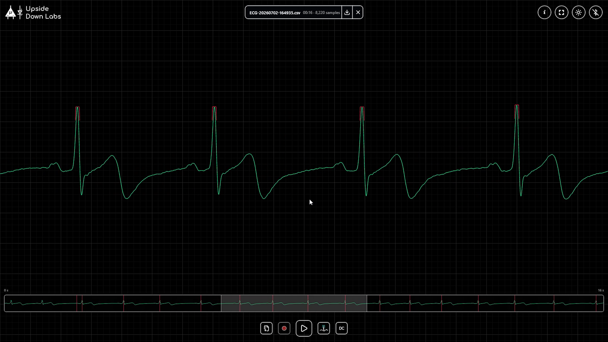
Recording Viewer#
Saving your data#
Recordings are stored in your browser, and clearing your browser’s site data deletes them. Download anything you want to keep as a CSV file. The file has two columns: Sample Counter and CH0, the filtered ECG signal sampled at 500 Hz.
Note
The minimum recording length is 12 seconds. If the device goes out of range, it disconnects on its own.